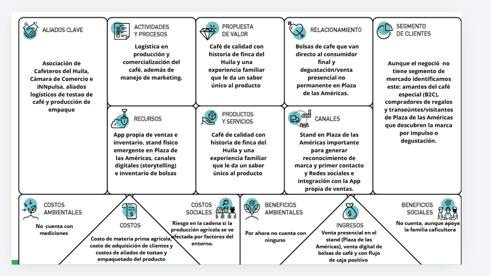

Contenido Publicitario y Galería
Material audiovisual para promoción de marca y experiencias B2B/B2C.
 Origen Huila
Origen Huila
 Proceso Honey
Proceso Honey
 Empaque QR
Empaque QR
 Catas Corporativas
Catas Corporativas
Diagnóstico financiero, Mercado Cabeza de Playa, Salience Model, Lienzo de Propuesta de Valor, Triple Impacto e Iceberg de Sostenibilidad.
Consultores: Sebastián Hernández & Juan Sebastián Jaimes | Bogotá, Colombia (2026)
Material audiovisual para promoción de marca y experiencias B2B/B2C.
Origen Huila
Proceso Honey
Empaque QR
Catas Corporativas

Haz clic en la imagen para ampliar
• Aliados Clave: Asociación de Cafeteros del Huila, Cámara de Comercio e iNNpulsa, aliados logísticos de tostao de café y producción de empaque[cite: 2].
• Actividades y Procesos: Logística en producción y comercialización del café, además de manejo de marketing[cite: 2].
• Propuesta de Valor: Café de calidad con historia de finca del Huila y una experiencia familiar que le da un sabor único al producto[cite: 2].
• Recursos: App propia de ventas e inventario, stand físico emergente en Plaza de las Américas, canales digitales (storytelling) e inventario de bolsas[cite: 2].
• Canales: Stand en Plaza de las Américas importante para generar reconocimiento de marca y primer contacto, redes sociales e integración con la App propia de ventas[cite: 2].
• Segmento de Clientes: Amantes del café especial (B2C), compradores de regalos y transeúntes/visitantes de Plaza de las Américas que descubren la marca por impulso o degustación[cite: 2].
• Costos: Costo de materia prima agrícola, costo de adquisición de clientes y costos de aliados de tostao y empaquetado del producto[cite: 2].
• Ingresos: Venta presencial en el stand (Plaza de las Américas), venta digital de bolsas de café y con flujo de caja positivo[cite: 2].
• Impacto Social y Ambiental: Apoyo a la familia caficultora y riesgos controlados en la cadena si la producción agrícola se ve afectada por factores del entorno[cite: 2].
15%[cite: 1]
$12.0M COP[cite: 1]
$6.0M COP[cite: 1]
$3,126 COP[cite: 1]
$152,381 COP[cite: 1]
Costo Unitario: $84,000 COP[cite: 1]
Venta Base: 30 un/año[cite: 1]$47,600 COP[cite: 1]
Costo Unitario: $19,000 COP[cite: 1]
Venta Base: 450 un/año[cite: 1]$28,571 COP[cite: 1]
Costo Unitario: $11,000 COP[cite: 1]
Venta Base: 600 un/año[cite: 1]$153,081 COP[cite: 1]
Costo Unitario: $83,000 COP[cite: 1]
Venta Base: 6 un/año[cite: 1]$47,619 COP[cite: 1]
Costo Unitario: $18,500 COP[cite: 1]
Venta Base: 150 un/año[cite: 1]$28,571 COP[cite: 1]
Costo Unitario: $10,500 COP[cite: 1]
Venta Base: 240 un/año[cite: 1]